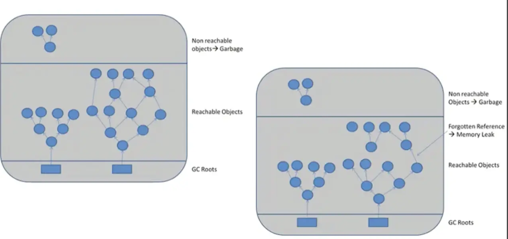
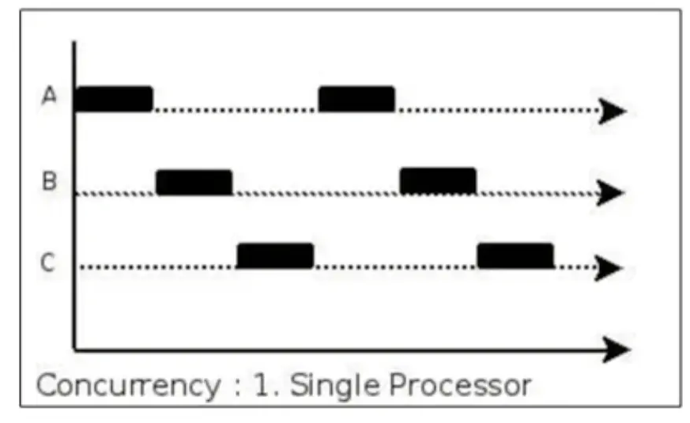
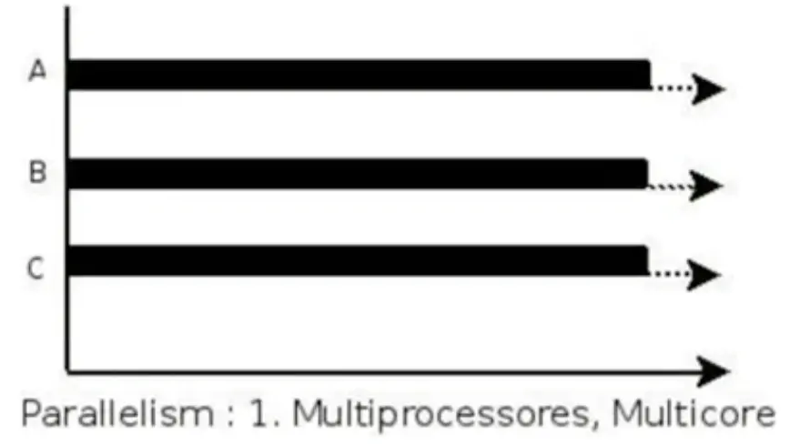
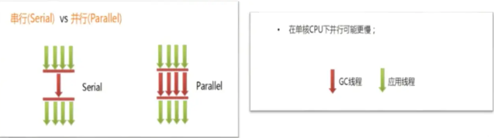
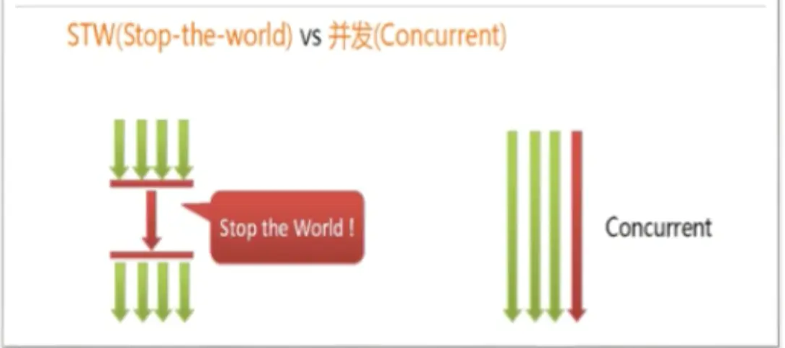
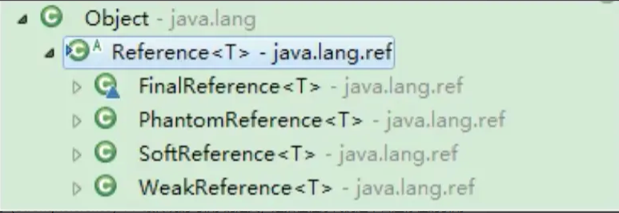
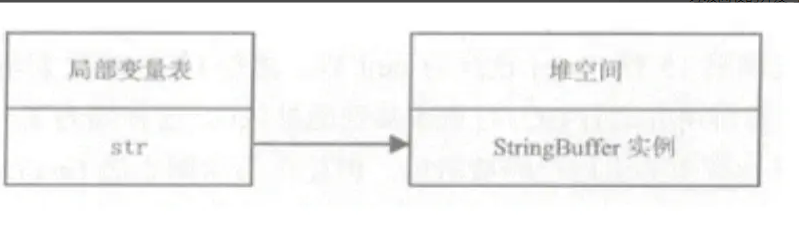
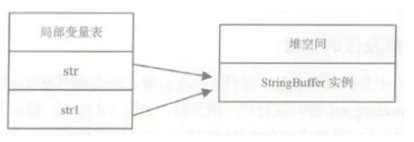

Java虚拟机_垃圾回收（二）
System.gc()的理解
- 在默认情况下，通过System.gc （）或者Runtime . getRuntime（） .gc（）的调用，会显式触发Full GC，同时对老年代和新生代进行回收，尝试释放被丢弃对象占用的内存。
- 然而System.gc（）调用附带一个免责声明，无法保证对垃圾收集器的调用( 无法保证马上触发GC )。
- JVM实现者可以通过system.gc（）调用来决定JVM的GC行为。而一般情况下，垃圾回收应该是自动进行的，无须手动触发，否则就太过于麻烦了。在一些特殊情况下，如我们正在编写一个性能基准，我们可以在运行之，间调用System.gc（）。
- 以下代码,如果注掉System.runFinalization(); 那么控制台不保证一定打印,证明了System.gc（）无法保证GC一定执行
1 | public class SystemGCTest { |
手动gc理解不可达对象的回收行为
1 | public class LocalVarGC { |
内存溢出与内存泄漏
- 内存溢出相对于内存泄漏来说，尽管更容易被理解，但是同样的，内存溢出也是引发程序崩溃的罪魁祸首之一。
- 由于GC一直在发展，所有一般情况下，除非应用程序占用的内存增长速度非常快，造成垃圾回收已经跟不上内存消耗的速度，否则不太容易出现O0M的情况。
- 大多数情况下，GC会进行各种年龄段的垃圾回收，实在不行了就放大招，来一次独占式的Full GC操作，这时候会回收大量的内存，供应用程序继续使用。
- javadoc中对OutOfMemoryError的解释是， 没有空闲内存，并且垃圾收集器也无法提供更多内存 。
内存溢出
- 首先说没有空闲内存的情况：说明Java虚拟机的堆内存不够。原因有二：
- Java虚拟机的堆内存设置不够。
比如：可能存在内存泄漏问题；也很有可能就是堆的大小不合理，比如我们要处理比较可观的数据量，但是没有显式指定JVM堆大小或者指定数值偏小。我们可以通过参数一Xms、一Xmx来调整。 - 代码中创建了大量大对象，并且长时间不能被垃圾收集器收集（存在被引用）对于老版本的Oracle JDK，因为永久代的大小是有限的，并且JVM对永久代垃圾回收（如，常量池回收、卸载不再需要的类型）非常不积极，所以当我们不断添加新类型的时候，永久代出现OutOfMemoryError也非常多见，尤其是在运行时存在大量动态类型生成的场合；类似intern字符串缓存占用太多空间，也会导致0OM问题。对应的异常信息，会标记出来和永久代相关： “java. lang. OutOfMemoryError： PermGen space”。
随着元数据区的引入，方法区内存已经不再那么窘迫，所以相应的00M有所改观，出现00M，异常信息则变成了：“java. lang. OutOfMemoryError： Metaspace"。 直接内存不足，也会导致0OM。
- Java虚拟机的堆内存设置不够。
- 这里面隐含着一层意思是，在抛出0utOfMemoryError之前，通常垃圾收集器会被触发，尽其所能去清理出空间。
- ➢例如：在引用机制分析中，涉及到JVM会去尝试回收软引用指向的对象等。
- ➢在java.nio.BIts.reserveMemory（）方法中，我们能清楚的看到，System.gc（）会被调用，以清理空间。
- 当然，也不是在任何情况下垃圾收集器都会被触发的
- ➢比如，我们去分配一一个超大对象，类似一个超大数组超过堆的最大值，JVM可以判断出垃圾收集并不能解决这个问题，所以直接拋出OutOfMemoryError
内存泄漏(Memory Leak)
- 也称作“存储渗漏”。严格来说， 只有对象不会再被程序用到了，但是GC又不能回收他们的情况，才叫内存泄漏 。
- 但实际情况很多时候一些不太好的实践（或疏忽）会导致对象的生命周期变得很长甚至导致0OM，也可以叫做宽泛意义上的“内存泄漏”
- 尽管内存泄漏并不会立刻引起程序崩溃，但是一旦发生内存泄漏，程序中的可用内存就会被逐步蚕食，直至耗尽所有内存，最终出现0utOfMemory异常，导致程序崩溃。
- 注意，这里的存储空间并不是指物理内存，而是指虚拟内存大小，这个虚拟内存大小取决于磁盘交换区设定的大小。

举例
- 1.单例模式
单例的生命周期和应用程序是一样长的，所以单例程序中，如果持有对外部对象的引用的话，那么这个外部对象是不能被回收的，则会导致内存泄漏的产生。 - 2.一些提供close的资源未关闭导致内存泄漏 数据库连接（ dataSourse. getConnection（）），网络连接（socket）和io连接必须手动close，否则是不能被回收的。
Stop The World
- Stop一the一World，简称STW，指的是Gc事件发生过程中，会产生应用程序的停顿。停顿产生时整个应用程序线程都会被暂停，没有任何响应，有点像卡死的感觉，这个停顿称为STW。
- ➢可达性分析算法中枚举根节点（GC Roots）会导致所有Java执行线程停顿。
- 分析工作必须在一个能确保一致性的快照中进行
- 一致性指整个分析期间整个执行系统看起来像被冻结在某个时间点上V- - 如果出现分析过程中对象引用关系还在不断变化，则分析结果的准确性无法保证
- ➢可达性分析算法中枚举根节点（GC Roots）会导致所有Java执行线程停顿。
- 被STW中断的应用程序线程会在完成GC之后恢复，频繁中断会让用户感觉像是网速不快造成电影卡带一样， 所以我们需要减少STW的发生。
- STW事件和采用哪款GC无关，所有的GC都有这个事件。
- 哪怕是G1也不能完全避免Stop一the一world情况发生，只能说垃圾回收器越来越优秀，回收效率越来越高，尽可能地缩短了暂停时间。
- STW是JVM在后台自动发起和自动完成的。在用户不可见的情况下，把用户正常的工作线程全部停掉。
- 开发中不要用System.gc（）,会导致Stop一the一world的发生。
测试代码
1 | public class StopTheWorldDemo { |
垃圾回收的并行与并发
并发(Concurrent)
- 在操作系统中，是指一个时间段中有几个程序都处于己启动运行到运行完毕之间，且这几个程序都是在同一个处理器上运行。
- 并发不是真正意义上的“同时进行”，只是CPU把一个时间段划分成几个时间片段（时间区间），然后在这几个时间区间之间来回切换，由于CPU处理的速度非常快，只要时间间隔处理得当，即可让用户感觉是多个应用程序同时在进行。

并行(Parallel)
- 当系统有一个以上CPU时，当一个CPU执行一个进程时，另一个CPU可以执行另一个进程，两个进程互不抢占CPU资源，可以同时进行，我们称之为并行（Parallel）。
- 其实 决定并行的因素不是CPU的数量，而是CPU的核心数量 ，比如一个CPU多个核也可以 并行。
- 适合科学计算，后台处理等弱交互场景

二者对比
- 并发，指的是多个事情，在同一时间段内同时发生了。
- 并行，指的是多个事情，在同一时间点上同时发生了。
- 并发的多个任务之间是互相抢占资源的。
- 并行的多个任务之间是不互相抢占资源的。
- 只有在多CPU或者一个CPU多核的情况中，才会发生并行。否则，看似同时发生的事情，其实都是并发执行的。
垃圾回收的并发与并行
并发和并行，在谈论垃圾收集器的上下文语境中，它们可以解释如下：
- 并行（Parallel） ：指多条垃圾收集线程并行工作，但此时用户线程仍处于等待状态。
- 如ParNew、 Parallel Scavenge、 Parallel 0ld；
- 串行（Serial）
- 相较于并行的概念，单线程执行。
- 如果内存不够，则程序暂停，启动JVM垃圾回收器进行垃圾回收。回收完，再启动程序的线程。

并发（Concurrent） ：指用户线程与垃圾收集线程同时执行（但不一定是并行的，可能会交替执行），垃圾回收线程在执行时不会停顿用户程序的运行。
- ➢用户程序在继续运行，而垃圾收集程序线程运行于另一个CPU上；
- ➢如： CMS、G1

安全点与安全区域
安全点(Safepoint)
- 程序执行时并非在所有地方都能停顿下来开始GC，只有在特定的位置才能停顿下来开始GC，这些位置称为“安全点（Safepoint） ”
- Safe Point的选择很重要，如果太少可能导致GC等待的时间太长，如果太频繁可能导致运行时的性能问题。大部分指令的执行时间都非常短暂，通常会根据“是否具有让程序长时间执行的特征”为标准。比如：选择些执行时间较长的指令作为Safe Point， 如方法调用、循环跳转和异常跳转等。
如何在GC发生时，检查所有线程都跑到最近的安全点停顿下来呢？
- 抢先式中断： （目前没有虚拟机采用了） 首先中断所有线程。如果还有线程不在安全点，就恢复线程，让线程跑到安全点。
- 主动式中断： 设置一个中断标志，各个线程运行到Safe Point的时候主动轮询这个标志，如果中断标志为真，则将自己进行中断挂起。
安全区域(Safe Region)
Safepoint机制保证了程序执行时，在不太长的时间内就会遇到可进入GC的Safepoint 。但是，程序“不执行”的时候呢？例如线程处于Sleep 状态或Blocked状态，这时候线程无法响应JVM的中断请求，“走” 到安全点去中断挂起，JVM也不太可能等待线程被唤醒。对于这种情况，就需要安全区域（Safe Region）来解决。
安全区域是指在一段代码片段中，对象的引用关系不会发生变化，在这个区域中的任何位置开始GC都是安全的。我们也可以把Safe Region 看做是被扩展了的Safepoint。
实际执行时:
- 1、当线程运行到Safe Region的代码时，首先标识已经进入了Safe Region，如果这段时间内发生GC，JVM会 忽略标识为Safe Region状态 的线程；
- 2、当线程即将离开Safe Region时， 会检查JVM是否已经完成GC，如果完成了，则继续运行，否则线程必须等待直到收到可以安全离开SafeRegion的信号为止；
引用
- 我们希望能描述这样一类对象： 当内存空间还足够时，则能保留在内存中；如果内存空间在进行垃圾收集后还是很紧张，则可以抛弃这些对象。 【既偏门又非常高频的面试题】强引用、软引用、弱引用、虚引用有什么区别？具体使用.场景是什么？
- 在JDK 1.2版之后，Java对引用的概念进行了扩充，将引用分为强引用（Strong Reference）、软引用（Soft Reference） 、弱引用（Weak Reference） 和虚引用（Phantom Reference） 4种，这4种引用强度依次逐渐减弱。
- 除强引用外，其他3种引用均可以在java.lang.ref包中找到它们的身影。如下图，显示了这3种引用类型对应的类，开发人员可以在应用程序中直接使用它们。

Reference子类中只有终结器引用是包内可见的，其他3种引用类型均为public，可以在应用程序中直接使用
- 强引用（StrongReference）I ：最传统的“引用”的定义，是指在程序代码之中普遍存在的引用赋值，即类似“0bject obj=new object（ ）”这种引用关系。 无论任何情况下，只要强引用关系还存在，垃圾收集器就永远不会回收掉被引用的对象 。
- 软引用（SoftReference） ：在系统将要发生内存溢出之前，将会把这些对象列入回收范围之中进行第二次回收。如果这次回收后还没有足够的内存，才会抛出内存溢出异常。
- 弱引用（WeakReference） ：被弱引用关联的对象只能生存到下一次垃圾收集之前。当垃圾收集器工作时，无论内存空间是否足够，都会回收掉被弱引用关联的对象。
- 虚引用（PhantomReference） ：一个对象是否有虛引用的存在，完全不会对其生存时 间构成影响，也无法通过虚引用来获得一个对象的实例。 为一个对象设置虛引用关联的唯一目的就是能在这个对象被收集器回收时收到一个系统通知(回收跟踪) 。
强引用: 不回收
- 在Java程序中，最常见的引用类型是强引用（普通系统99%以上都是强引用），也就是我们最常见的普通对象引用，也是默认的引用类型。
- 当在Java语言中使用new操作符创建一个新的对象， 并将其赋值给一个变量的时候，这个变量就成为指向该对象的一个强引用。
- 强引用的对象是可触及的，垃圾收集器就永远不会回收掉被引用的对象。
- 对于一一个普通的对象，如果没有其他的引用关系，只要超过了引用的作用域或者显式地将相应（强）引用赋值为null，就是可以当做垃圾被收集了，当然具体回收时机还是要看垃圾收集策略。
- 相对的，软引用、 弱引用和虚引用的对象是软可触及、弱可触及和虛可触及的，在一定条件下，都是可以被回收的。所以，强引用是造成Java内存泄漏的主要原因之一。
测试代码
1 | public class StrongReferenceTest { |
StringBuffer str = new StringBuffer ("Hello,尚硅谷");
局部变量str指向StringBuffer实例所在堆空间，通过str可以操作该实例，那么str就是StringBuffer实例的强引用
对应内存结构：

此时,如果再运行一个赋值语句:
StringBuffer str1 = str;
对应内存结构:

本例中的两个引用，都是强引用，强引用具备以下特点：
- 强引用可以直接访问目标对象。
- 强引用所指向的对象在任何时候都不会被系统回收，虚拟机宁愿抛出OOM异常，也不会回收强引用所指向对象。
- 强引用可能导致内存泄漏。
软引用: 内存不足即回收
- 软引用是用来描述一 些还有用，但非必需的对象。只被软引用关联着的对象，在系统将要发生内存溢出异常前，会把这些对象列进回收范围之中进行第二次回收，如果这次回收还没有足够的内存，才会抛出内存溢出异常。
- 软引用通常用来实现内存敏感的缓存 。比如：高速缓存就有用到软引用。如果还有空闲内存，就可以暂时保留缓存，当内存不足时清理掉，这样就保证了使用缓存的同时，不会耗尽内存。
- 垃圾回收器在某个时刻决定回收软可达的对象的时候，会清理软引用，并可选地把引用存放到一个引用队列（ Reference Queue）。
- 类似弱引用，只不过Java虚拟机会尽量让软引用的存活时间长一些，迫不得.已才清理。
- 软引用：
- 当内存足够: 不会回收软引|用的可达对象
- 当内存不够时: 会回收软引用的可达对象
- 在JDK 1. 2版之后提供了java.lang.ref.SoftReference类来实现软引用。
1 | Object obj = new object（）； //声明强引用 |
测试代码
1 | /** |
弱引用: 发现即回收
- 弱引用也是用来描述那些非必需对象，被弱引用关联的对象只能生存到下一次垃圾收集发生为止。在系统GC时，只要发现弱引用，不管系统堆空间使用是否充足，都会回收掉只被弱引用关联的对象。
- 但是，由于垃圾回收器的线程通常优先级很低，因此，并不一 定能很快地发现持有弱引用的对象。在这种情况下，弱引用对象可以存在较长的时间。
- 弱引用和软引用一样，在构造弱引用时，也可以指定一个引用队列，当弱引用对象被回收时，就会加入指定的引用队列，通过这个队列可以跟踪对象的回收情况。
- 软引用、弱引用都非常适合来保存那些可有可无的缓存数据。如果这么做，当系统内存不足时，这些缓存数据会被回收，不会导致内存溢出。而当内存资源充足时，这些缓存数据又可以存在相当长的时间，从而起到加速系统的作用。
- 在JDK1.2版之后提后了java.lang.ref.WeakReference类来实现弱引用
1 | Object obj = new object（）； //声明强引用 |
- 弱引用对象与软引用对象的最大不同就在于，当GC在进行回收时，需要通过算法检查是否回收软引用对象，而对于弱引用对象，GC总是进行回收。弱引用对象更容易、更快被GC回收。
- 面试题：你开发中使用过WeakHashMap吗？
- 通过查看WeakHashMap源码,可以看到其内部类Entry使用的就是弱引用
- line 702 ->
private static class Entry<K,V> extends WeakReference<Object> implements Map.Entry<K,V> {...}
测试代码
1 | public class WeakReferenceTest { |
虚引用: 对象回收跟踪
- 虚引用(Phantom Reference),也称为“幽灵引用”或者“幻影引用”，是所有引用类型中最弱的一个。
- 一个对象是否有虚引用的存在，完全不会决定对象的生命周期。如果一个对象仅持有虚引用，那么它和没有引用几乎是一样的，随时都可能被垃圾回收器回收。
- 它不能单独使用，也无法通过虚引用来获取被引用的对象。当试图通过虚引用的get（）方法取得对象时，总是null。
- 为一个对象设置虚引用关联的唯一目的在于跟踪垃圾回收过程 。比如：能在这个对象被收集器回收时收到一个系统通知。
- 虚引用必须和引用队列一起使用。虚引用在创建时必须提供一个引用队列作为参数。当垃圾回收器准备回收一个对象时，如果发现它还有虛引用，就会在回收对象后，将这个虚引用加入引用队列，以通知应用程序对象的回收情况。
- 由于虚引用可以跟踪对象的回收时间，因此，也可以将一些资源释放操作放置在虛引用中执行和记录。
- 在JDK 1. 2版之后提供了PhantomReference类来实现虚引用。
1 | object obj = new object(); |
测试代码
1 | public class PhantomReferenceTest { |
输出
1 | null |
终结器引用
- 它用以实现对象的finalize（）方法，也可以称为终结器引用。
- 无需手动编码， 其内部配合引用队列使用。
- 在GC时， 终结器引用入队。由Finali zer线程通过终结器引用找到被引用对象并调用它的finalize（）方法，第二次GC时才能回收被引用对象。
如果您喜欢此博客或发现它对您有用，则欢迎对此发表评论。 也欢迎您共享此博客，以便更多人可以参与。 如果博客中使用的图像侵犯了您的版权，请与作者联系以将其删除。 谢谢 ！